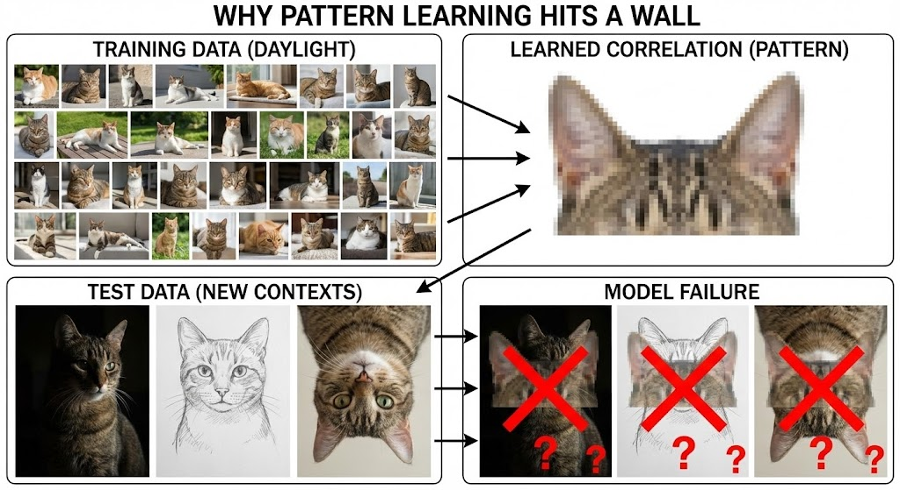
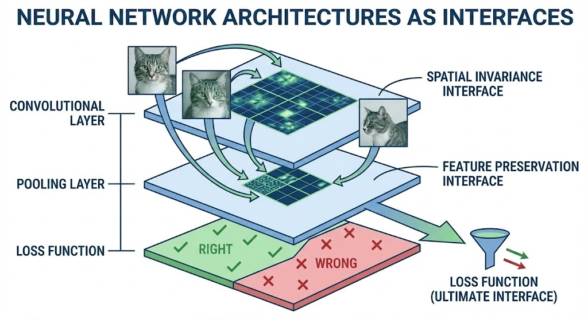
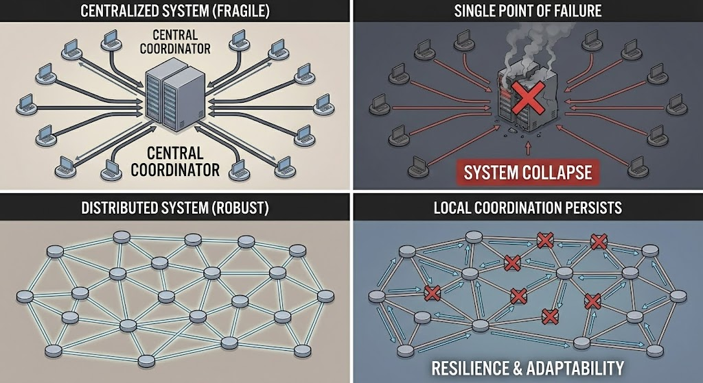

Inferential Interfaces
Cognitive interfaces are inferential interfaces. They maintain models of the world that enable prediction and action. These models are not static representations, but dynamic interfaces that actively maintain coherence between expectations and reality.
As shown above, this shows how cognitive interfaces learn patterns and make predictions. The interface doesn't just store information, it actively maintains models that enable prediction. When patterns are detected, the interface updates its expectations. When predictions fail, the interface must adjust. This active maintenance of coherence between expectations and reality is what creates intelligence. The interface is not a passive storage system, but a dynamic process that continuously refines its models.
"The self is not a single thing. It is a hierarchy of inferential interfaces, each maintaining coherence at its own scale."
When predictions fail, the interface must update. When expectations conflict, the interface must resolve the conflict. This active maintenance of coherence is what creates intelligence.
Markov Blankets and the Self
A Markov blanket is an inferential interface that separates internal states from external states. It maintains a boundary that shields internal coherence from external noise while allowing selective exchange of information.
As shown above, neural network architecture illustrates how cognitive interfaces are structured. The layers of a neural network create boundaries that filter and transform information, maintaining internal coherence while allowing selective exchange. Each layer acts as a Markov blanket, shielding the layers below from external noise while enabling the flow of relevant information. This hierarchical structure shows how the self emerges from nested interfaces, each maintaining coherence at its own scale.
The self we experience is not a single blanket, but a stack. We have a sense of self at the level of our body, our mind, and our social identity. Each of these is a Markov blanket, organizing inference at its own scale.
As shown above, this contrasts centralized and decentralized architectures, showing how distributed interfaces create resilience. A centralized system has a single point of failure, if the central controller breaks, the whole system fails. A decentralized system with well-structured interfaces can maintain coherence even when individual components fail. This demonstrates a key principle of cognitive interfaces: intelligence doesn't require a central controller, but emerges from the coordination of distributed interfaces that maintain coherence through their interactions.
Attention and Filtering
Cognitive interfaces include attention mechanisms that filter information. Not everything can be processed at once. Attention selects what matters, what is relevant for current goals and needs.

As shown above, this shows how attention shapes our perception of the world. Before attention filters the sensory flux, the world is a continuous stream of information without clear boundaries. Attention creates objects by selecting what matters, creating the boundaries that enable us to act effectively. The filtering is not arbitrary, it's constrained by our models, goals, and current state. Attention creates focus, enabling effective action in a complex world by highlighting what's relevant and suppressing what's not.
This filtering is not arbitrary. It is constrained by the organism's models, its goals, and its current state. Attention creates a focus that enables effective action in a complex world.
Key Concepts
- Predictive Models: Interfaces that maintain coherence between expectations and reality
- Markov Blankets: Inferential interfaces that separate internal from external
- Attention Mechanisms: Filters that select relevant information
- Inferential Processes: Navigation of possibility spaces
- The Self: Hierarchy of inferential interfaces
- Free Energy Minimization: Principle that maintains coherence
Building on Sensorimotor Interfaces
Cognitive interfaces build upon sensorimotor interfaces. They rely on the perception-action loop established at the sensorimotor level, but add the ability to maintain models, make predictions, and navigate possibility spaces. This creates the conditions for intelligence and the emergence of selves.